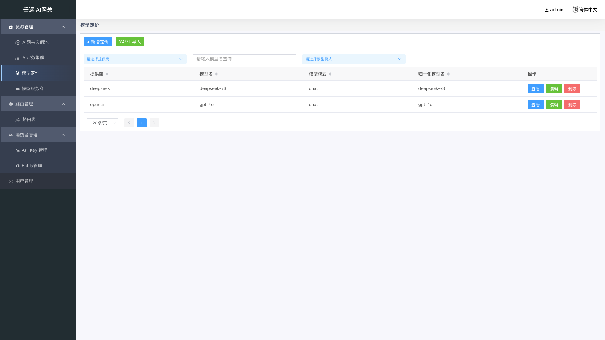
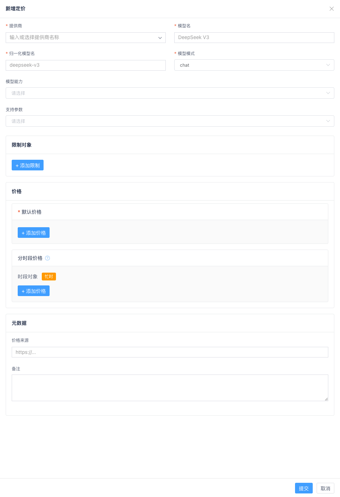
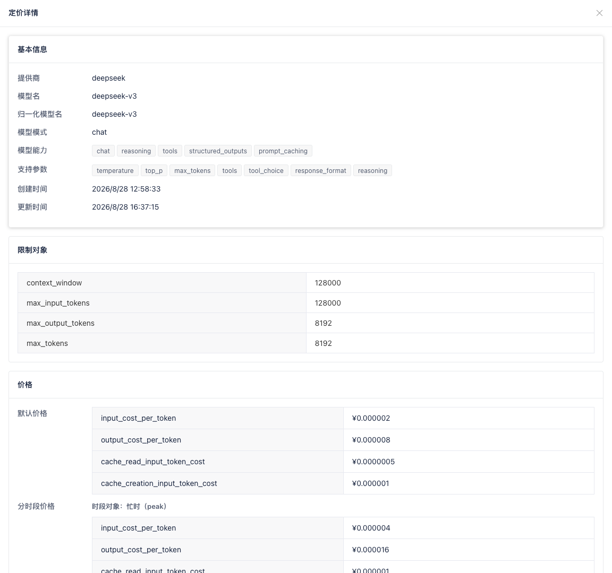
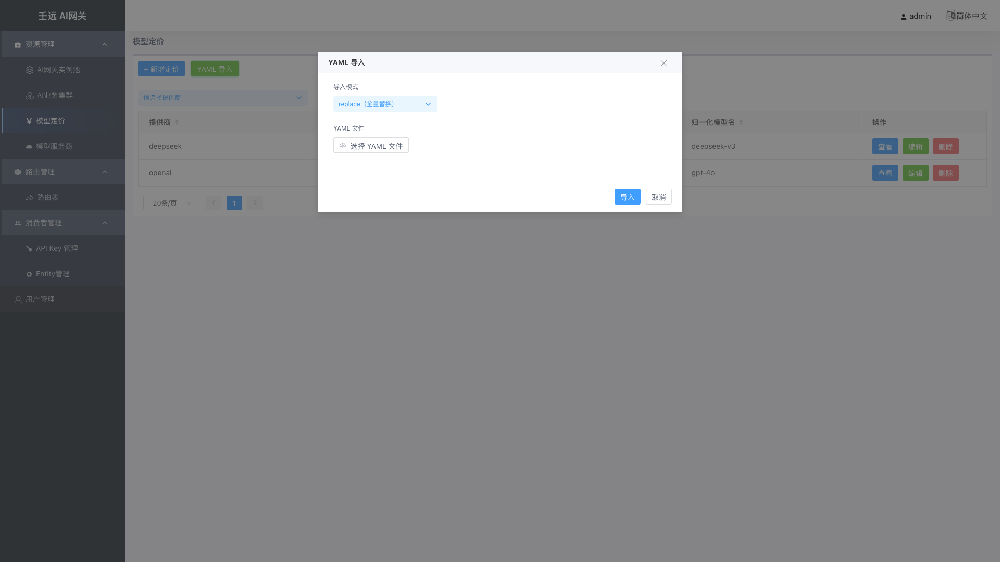

06 模型定价：管理模型价格与计费
模型定价用于维护各提供商 + 模型名的价格信息，供网关进行费用核算。定价数据以「提供商 / 模型名 / 归一化模型名 / 模型模式」为唯一维度。
入口：资源管理 → 模型定价。
与模型服务商的关系：
提供商字段建议与 03 章 模型服务商 中的服务商name保持一致。服务商列表支持「查询模型价格」跳转到本页并按提供商筛选。若需按时段差异化计价，须先在服务商侧配置「分段计价」（忙时时间段），再在本页为对应provider维护 分时段价格。
6.1 列表页
展示当前已维护的模型定价记录。

分页：默认每页 50 条，可通过底部分页下拉切换为 20 / 50 / 100 / 200 / 500 / 1000 条/页。与其他模块的前端分页不同，本模块采用服务端分页，切换页码或每页条数时会重新请求后端。
表格列说明：
| 列名 | 说明 |
|---|---|
| 提供商 | 价格归集标识，建议与模型服务商 name 一致 |
| 模型名 | 模型名称 |
| 归一化模型名 | 基础模型名称 |
| 模型模式 | 模型能力模式 |
| 操作 | 详情、编辑、删除 |
列表上方有「+ 新增定价」和「YAML 导入」按钮。
从服务商跳转：在模型服务商列表点击「查询模型价格」，会按该服务商名称筛选本列表；若无记录，提示「未找到提供商 {provider} 的模型定价」。
6.2 创建 / 编辑定价
点击「+ 新增定价」或在操作列点击「编辑」，右侧弹出创建/编辑抽屉。

基础信息
| 字段 | 必填 | 默认值 | 校验规则 | 说明 |
|---|---|---|---|---|
| 提供商 | 是 | 空 | 长度 1-255 | 价格归集标识；建议与模型服务商 name 一致，便于从服务商页跳转查询 |
| 模型名 | 是 | 空 | 长度 1-255 | 模型名称 |
| 归一化模型名 | 是 | 空 | 长度 1-255 | 基础模型名称 |
| 模型模式 | 是 | 空 | 枚举值 | 模型能力模式，如 chat、completion、embedding 等 |
mode 枚举值（常用）：
| 枚举值 | 说明 |
|---|---|
| chat | 聊天对话 |
| completion | 文本补全 |
| responses | Responses API |
| image_generation | 图像生成 |
| image_edit | 图像编辑 |
| embedding | 文本嵌入 |
| rerank | 重排序 |
| audio_speech | 语音合成 |
| audio_transcription | 语音转录 |
| video_generation | 视频生成 |
| ocr | OCR |
| search | 搜索 |
| realtime | 实时交互 |
能力与支持参数
- 模型能力：模型支持的能力标签，多选。如
chat、vision、reasoning、tools、function_calling等。 - 支持参数：模型支持的请求参数，多选。如
temperature、top_p、max_tokens、tools、response_format等。
限制对象（模型限制）
动态键值对，键名从枚举值中选择，值为非负整数。
| 键名 | 含义 |
|---|---|
| context_window | 上下文窗口 |
| max_input_tokens | 最大输入 Token 数 |
| max_output_tokens | 最大输出 Token 数 |
| max_tokens | 最大 Token 数 |
同一「限制对象」中键名不能重复。
价格
「价格」Card 内包含三块配置：默认价格（必填）、分时段价格（选填）与 批量折扣系数（选填，mode=batch 时不显示）。货币固定为 RMB，无需输入。
默认价格
必填；至少添加一条价格项。键名从枚举中选择，值为非负数。可输入科学计数法或十进制（如 1.5e-6 与 0.0000015）。失焦后按量级自动格式化：绝对值小于 1e-4 或大于等于 1e6 显示为科学计数法，其余为十进制。单价格折算 价格 × 1e8 不得超过 2^53（约 9e15）。
| 说明 | 内容 |
|---|---|
| 何时使用 | 所有请求的 fallback 价格；未命中任何分时段 tier 时使用 |
| 校验 | 至少 1 条；键名不可重复；值须 ≥ 0；科学计数法与十进制均可；价格 × 1e8 不得超过 2^53 |
价格字段从下拉枚举中选择，常用键名按类别如下：
文本 Token：
| 键名 | 含义 |
|---|---|
| input_cost_per_token | 每 Token 输入成本 |
| output_cost_per_token | 每 Token 输出成本 |
缓存：
| 键名 | 含义 |
|---|---|
| cache_read_input_token_cost | 缓存读入 Token 成本 |
| cache_creation_input_token_cost | 缓存创建 Token 成本（5m TTL） |
| cache_creation_input_token_cost_1h | 缓存创建 Token 成本（1h TTL） |
长上下文分档（按请求规模阶梯计价）：
| 键名 | 含义 |
|---|---|
| input_cost_per_token_above_200k_tokens | 超过 200k tokens 的输入成本 |
| output_cost_per_token_above_200k_tokens | 超过 200k tokens 的输出成本 |
| input_cost_per_token_above_256k_tokens | 超过 256k tokens 的输入成本 |
| output_cost_per_token_above_256k_tokens | 超过 256k tokens 的输出成本 |
| input_cost_per_token_above_272k_tokens | 超过 272k tokens 的输入成本 |
| output_cost_per_token_above_272k_tokens | 超过 272k tokens 的输出成本 |
| input_cost_per_token_above_512k_tokens | 超过 512k tokens 的输入成本 |
| output_cost_per_token_above_512k_tokens | 超过 512k tokens 的输出成本 |
图像 / 音频：
| 键名 | 含义 |
|---|---|
| output_cost_per_image | 每张输出图像成本 |
| input_cost_per_image_token | 每图像输入 Token 成本 |
| input_cost_per_audio_token | 每音频输入 Token 成本 |
| output_cost_per_audio_token | 每音频输出 Token 成本 |
其他：
| 键名 | 含义 |
|---|---|
| output_cost_per_second | 每秒输出成本 |
| input_cost_per_query | 每次查询输入成本 |
| ocr_cost_per_page | 每页 OCR 成本 |
下拉枚举还包含像素 / 图像质量 / 音视频时长 / 搜索上下文等键名（如
output_cost_per_pixel、input_cost_per_audio_per_second、search_context_cost_per_query），按所选模型计费模型选用。
分时段价格
选填；用于在特定时段使用不同于默认价格的费率。当前 UI 仅支持 忙时（peak） 一个时段对象（只读 Tag 展示）。
| 说明 | 内容 |
|---|---|
| 何时使用 | 请求发生时，若该 provider 在服务商「分段计价配置」中定义的忙时时间段内，则使用本块 peak 价格 |
| 未命中时 | 回退使用上方 默认价格 |
| 校验 | 键名不可重复；值须 ≥ 0；可不配置（留空表示全时段使用默认价格）；表示法与上限同默认价格 |
配置顺序建议：先在 3.9 节 分段计价配置 为服务商定义忙时的星期与起止时间，再在本页为同一
provider填写peak分时段价格项。时段判定使用服务商配置的 IANA 时区（如Asia/Shanghai）。
分时段价格区标题旁有 Tooltip 说明：「分时段价格配置专属的价格；不在这些时段内时将使用默认价格，可选填。」
批量折扣系数
选填；配置本行对应的批量价折扣（batch_discount）。输入框位于「价格」卡片内、分时段价格之后，仅在「模型模式」不是 batch 时显示（mode=batch 的价格行不渲染该输入）。
| 字段 | 必填 | 默认值 | 校验规则 | 说明 |
|---|---|---|---|---|
| 批量折扣系数 | 否 | 0.5 | (0,1] 区间内的浮点数；非法时提示「批量折扣系数必须为 (0,1] 区间内的浮点数」 | 导出时把本行各 Token 价格键 × 系数展开，生成 (provider, model, mode=batch) 价格行随 ModelTable 下发 |
该字段标题旁的 Tooltip 说明：「导出时将本行各 token 价格键 × 系数展开生成 (provider, model, mode=batch) 价格行随 ModelTable 下发；tier 价逐档展开；手工维护的 mode=batch 行优先于系数展开。」
补充语义：
- 展开范围：默认价格内各 Token 价格键逐键乘以系数；分时段价格（
tier_prices.peak）按同一系数逐档展开，随批量行一同下发。 - 手工行优先：若库中已存在手工维护的
(provider, model, mode=batch)记录，则以手工行为准、不做系数展开，导出时记录告警日志（不阻塞导出）。 - 提交规则：仅当「模型模式」不是
batch且填写了系数时才随提交体附带；否则该字段置为null（不传系数 = 导出不展开批量价行）。 - 只影响导出：修改系数不会改写本行已存价格，只影响下发到 BFE 的批量价格行。
元数据
- 价格来源：来源 URL，需符合 URL 格式。
- 备注：备注文本。
6.3 查看详情
点击行或操作列「详情」，右侧弹出只读抽屉，展示全部字段：
- 基础信息：提供商、模型名、归一化模型名、模型模式
- 模型能力、支持参数（标签展示）
- 限制对象
- 价格：默认价格（键值表）；分时段价格（按时段对象分组，如「时段对象：忙时（peak）」）；批量折扣系数
- 元数据（价格来源、备注）
- 创建时间、更新时间
查看态下「批量折扣系数」的展示规则：
- 非
batch模式：展示系数值（按价格格式化的数字）；未配置时展示- mode=batch：显示「-（mode=batch 的价格行不配置批量折扣系数）」

6.4 YAML 导入
点击列表上方「YAML 导入」，弹出导入弹窗：

- 导入模式：
replace：替换已有数据。merge：与已有数据合并。
- 上传文件：支持
.yaml/.yml文件。 - 系统上传前会解析并校验 YAML 中
version存在、default_currency === 'RMB'。 - YAML 中可同时包含
prices（默认价格）与tier_prices.peak（分时段价格）。 - 导入完成后展示成功数、跳过数、错误列表。
6.5 注意事项
- 创建/编辑时前端会校验（提供商、模型名、模型模式）组合唯一性。
- 默认价格至少一条；分时段价格可选，未配置时全时段使用默认价格。
- 「限制对象」「默认价格」「分时段价格」中键名均不能重复。
- 价格字段为非负数；科学计数法与十进制表示法等价合法（如
1.5e-6与0.0000015）；单价格折算价格 × 1e8不得超过2^53（约9e15）。 - 编辑（PUT）合并语义：
prices/tier_prices为键级合并——表单中出现的键覆盖原值，未出现的键保留。删除某行再提交不会从后端清除该键。limits/metadata/ 能力与参数列表仍为整块替换。 提供商建议与模型服务商name一致，并与集群「所属服务商」对齐，费用核算才能正确归集。- 分时段计费的时段定义在服务商资源中维护，本页只维护各 tier 对应的价格数值。
- 批量折扣系数仅在「模型模式」不是
batch时可填（mode=batch的行不渲染该输入）；系数展开只从非批量行生成，手工维护的batch行优先于系数展开。 - 未填写批量折扣系数 = 导出不生成批量价行；填
0会被拦截（合法区间为(0,1]）。